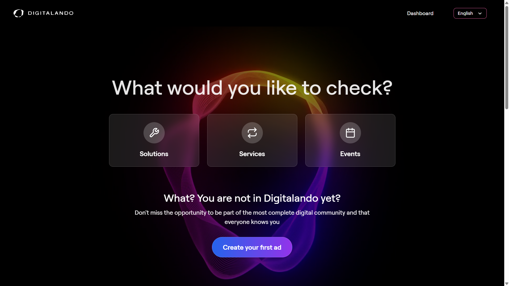
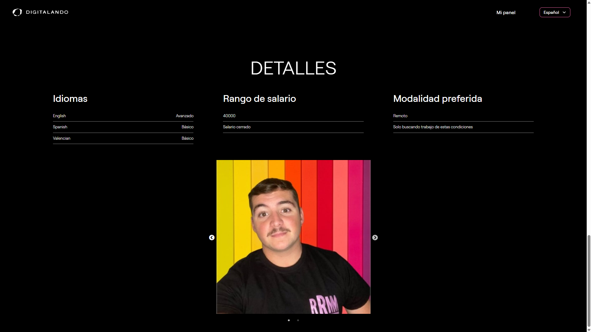
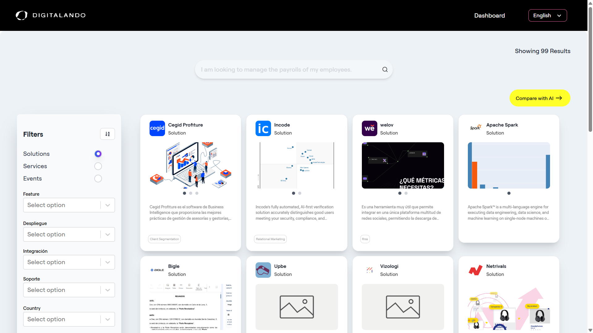
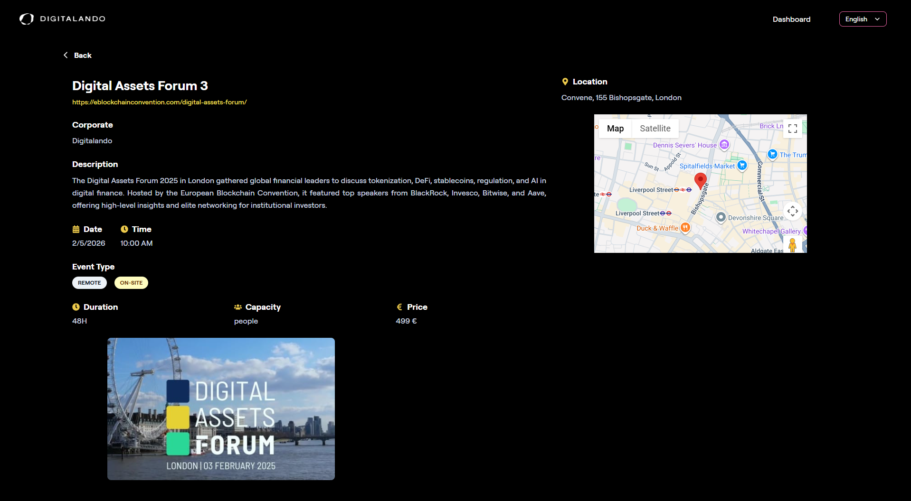
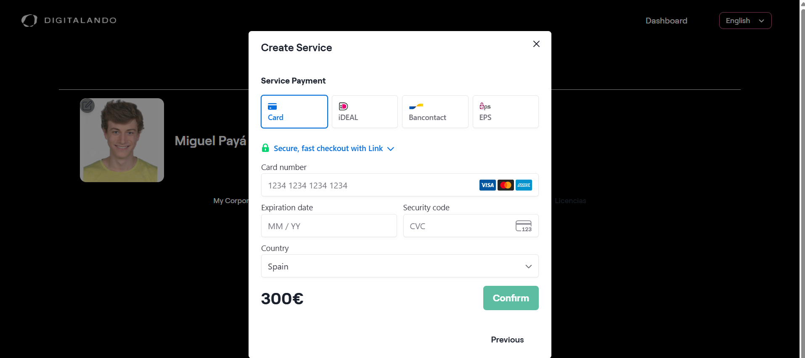
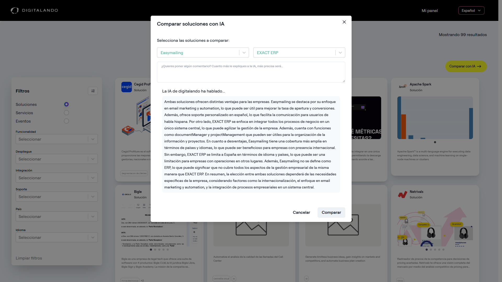

Digitalando
Una plataforma de digitalización a gran escala que conecta a las empresas con las soluciones digitales, los servicios y el talento que necesitan. Me incorporé a una base de código en fase avanzada como desarrollador frontend, desarrollando funcionalidades y elevando la calidad de toda la plataforma —recortando el LCP de la landing de 6,7s a 3,2s y su tiempo de carga completa un ~44%.






Resumen
Digitalando nació para ayudar a las empresas a moverse en la era digital. Lo que empezó como un comparador de soluciones tecnológicas creció hasta convertirse en un gran ecosistema multimódulo que conecta a las empresas con software, servicios, talento y orientación tecnológica.
Me incorporé en una fase avanzada del desarrollo y trabajé durante los últimos meses del proyecto como desarrollador frontend. Mi foco fue el frontend en React —construir y refactorizar funcionalidades en numerosos módulos y elevar de forma sistemática la calidad de la plataforma.
En qué trabajé
- Construí y mejoré componentes del marketplace —tarjetas, filtros, búsqueda y módulos de UI.
- Refactoricé componentes complejos (subidas de archivos, galerías, formularios, modales, sliders) para hacerlos mantenibles.
- Mejoré el rendimiento y la consistencia en el blog, los perfiles digitales y las áreas corporativas y de administración.
- Introduje correcciones de accesibilidad en docenas de componentes y estandaricé los patrones de gestión de errores.
- Mejoré el uso de i18n y añadí traducciones ES/EN que faltaban.
- Colaboré con el equipo de backend —endpoints menores y flujos de integración— y depuré problemas de enrutado y de contexto.
Elevar la calidad de la plataforma
Una parte central de mi rol fue subir las puntuaciones de calidad globales de la aplicación. Mediante reestructuración, correcciones y optimizaciones sistemáticas, ayudé a llevar SEO, Accesibilidad y Buenas prácticas a un 100/100 en cada una.
- Refactoricé componentes de React para evitar renders innecesarios y reemplacé patrones obsoletos.
- Cargué de forma diferida módulos pesados para reducir el bundle inicial, y eliminé librerías sin usar y código muerto.
- Mejoré el HTML semántico y añadí aria-labels, textos alternativos, landmarks y roles que faltaban.
- Optimicé las imágenes y la carga de medios y reforcé la consistencia responsive en docenas de vistas.
- Mejoré los metadatos, las etiquetas OpenGraph y la estructura del documento.
Los números
Con su etiqueta puesta, porque una puntuación de categoría de Lighthouse y una Core Web Vital miden cosas muy distintas y la diferencia merece contarse con honestidad:
- Largest Contentful Paint: 6,7s -> 3,2s —un recorte del 52%, y el que de verdad nota quien entra, porque es el momento en que el contenido principal termina de pintarse.
- Carga completa de la página: un ~44% menos —todo asentado, no sólo el primer pintado relevante. Es una métrica distinta del LCP, y por eso los dos porcentajes no coinciden.
- Puntuación SEO de Lighthouse: 82 -> 100 —conviene nombrarlo con precisión: es la lista de comprobación técnica (enlaces rastreables, metadatos, estructura de documento válida), no el posicionamiento en buscadores. Dice que los cimientos están bien, nada más.
Medido con Lighthouse, tomando la mediana de varias ejecuciones en lugar de una sola pasada —una ejecución aislada varía lo suficiente como para fabricar un resultado por su cuenta.
3,2s es un avance real, no una meta alcanzada. El umbral de un LCP «bueno» son 2,5s, así que la landing se quedó en la franja intermedia, y prefiero decirlo antes que redondearlo hasta convertirlo en un triunfo. El presupuesto restante estaba en cosas que no me correspondía eliminar: un vídeo de fondo sobre el que el equipo de marketing había construido la landing, y las etiquetas de analítica y consentimiento con las que operaba el negocio. Bajar de 2,5s implicaba o renegociar esos activos o una migración más profunda —y ninguna de las dos cabe en una optimización a corto plazo. El siguiente paso que habría defendido era servir el vídeo tras un fotograma de póster y diferir las etiquetas de terceros hasta después del primer pintado, que es más una conversación con marketing que un ticket para ingeniería.
La plataforma
Digitalando tenía un alcance enorme —un conjunto de módulos interconectados más que un único producto:
- Marketplace — comparador de software, un marketplace de servicios, descubrimiento de talento freelance y eventos tecnológicos de interés público, con filtros y búsqueda avanzados.
- Herramientas corporativas — perfiles corporativos, gestión de equipos, servicios y certificaciones, y un sistema de documentación.
- Perfiles digitales — páginas de identidad personal con experiencia, formación, idiomas y paneles basados en habilidades.
- Reclutamiento y talento — vacantes, emparejamiento de candidatos, búsqueda avanzada de talento y un panel de reclutador.
- Contenido y comunidad — un blog con editor, testimonios, experiencias demo y soporte multilingüe completo ES/EN.
- Panel de administración — eventos, servicios, certificaciones y supervisión de usuarios y empresas, además de recomendaciones con IA.
Tecnología y enfoque
El frontend está construido con React, React Router y TanStack React Query, con una capa de componentes shadcn/ui (basada en Radix) sobre TailwindCSS, formularios con React Hook Form + Zod, internacionalización con i18next, pagos con Stripe y SEO/metadatos con react-helmet —además de gráficas, Google Maps, reCAPTCHA y una build con Capacitor para móvil.
La mayor parte del trabajo fue dentro de una base de código madura y en evolución: adoptar patrones de reutilización de componentes, introducir hooks personalizados para simplificar la lógica compartida y migrar componentes heredados al sistema de UI actualizado —todo manteniendo el código nuevo alineado con las reglas de accesibilidad y SEO de la plataforma.
Estado
Digitalando ya no está en funcionamiento —la empresa que había detrás cerró. Las capturas de arriba muestran partes de la plataforma tal como funcionaba, sin exponer datos privados de negocio.